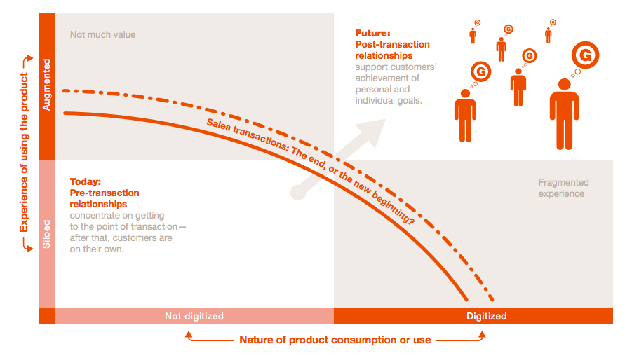
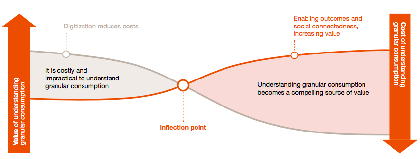
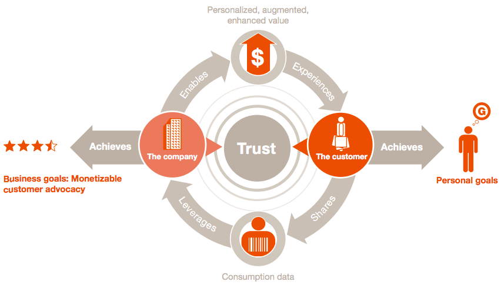

第二篇研究笔记重点看2013年PwC的报告《Internet of Things: Evolving transactions into relationships》的第一篇文章，虽然是2013年的报告，但是其从商业角度来谈新的一种客户关系，而少谈技术，格外有心意。
Using Technology to help customers achieve their goals
本文所讨论的是新的技术如何帮助客户实现他们的目标，传统商业模式的基础是：服务+交易，而IoT技术的出现可能改变传统商业模式，服务的目标从“完成交易”跨越到了帮助客户“完成目标”，即进入了“后交易关系”的时代。
后交易关系
传统互联网的交易模式（即电商模式）的主要元素，如浏览、比价、评论、购买等，都是“面向交易”的，而非超越交易的客户关系。而IoT的基本元素是传感器、无线传输、嵌入式技术、实时大数据分析等，他们都是面向交易之后真正的客户与产品或服务的互动（Post-transaction Relationships）。

未来的趋势使得企业的CIO不单单需要对交易负责（帮助完成交易的一系列基础计算环境），还需要对后交易关系产生巨大的影响。
新的产品逻辑
这样的新技术可能性使得赢得市场的产品是那些能真正帮助客户完成长期目标的产品，而不是那些完成短期需要的解决方案。企业则需要更深刻地理解客户的真正目标，未来的产品市场可能在IoT时代出现两个特点：
- 更加个人的用户目标；
- 完成目标的关键在于过程多于结果。
这里的逻辑是：当产品设计的重点在于鼓励完成交易，那么商业目标的完成将优先于客户用户目标的完成；当产品设计的核心在于管理和开发超越交易的客户关系，那么产品的重要特性是预知、反应客户关系中的问题，评价客户关系的现状、以及发现新的服务机会。
消费过程数字化
IoT的核心优势在于将物理世界的消费过程数字化（Digitizing Consumption），被数字化的消费过程将使得企业获得：
首先，第一时间了解到传统产品极难获得的“过程数据”，这在传统互联网时代是难以相信的。这种数据帮助企业理解细粒度的消费行为（Granular Consumption），一旦对这种消费行为的理解积累到一定程度，就会形成相当具有优势的价值源；

其次，一个能够及时反馈过程的产品也能够影响用户的行为模式，甚至引导客户走向产品期待的方向。
除了电子化的消费过程，物理和数字体验的界限也变得模糊起来，客户可能分不出来什么是物理体验什么是数字体验。
新的价值系统
但是，“后交易关系”中被电子化的消费过程所带来的最大问题是信任问题，IoT时代所带来的道德、隐私、和安全问题可能是真正互联网作为一种社会形态（而不只是一种技术形态）讨论伦理的第一步。
有趣的是，一个完整和持续、驱动客户和企业的价值系统持续运转的，是信任。

IoT技术在这个价值环中的真正作用是：
- 帮助实现更加个人、模糊线上下、增强体验的产品和服务、并以此数字化消费过程；
- 帮助在数字化消费过程中收集消费数据。
事实上这个环（后交易关系的价值环）还需要各个环节合作才能够真正实现价值滚动，例如如何发现客户目标、鼓励客户分享数据、大数据分析模型的建立、数据收集的基础设施、数据到新商业机会的转化和相应实验。
it's no longer too costly or impractical to understand granular
consumption
更好的连接性、更普遍的移动终端、更强大的传感器、更优秀的嵌入式计算能力，理解客户“微消费”行为可能在未来难度大大降低，已经有许多企业正在关注“后交易关系”，并基于这个价值体系建立了许多突破性的商业模式与新的产品或服务，例如许多健康领域的先行者。
核心逻辑
总得来说，IoT以及周边基础设施技术的成熟，使得在完成交易之后，用专属的、无缝连接的、更好的服务体验服务每位客户成为可能。
新的价值环形成，IoT技术所考虑的是如何提供这种更加优秀的体验、建立更稳定的基础设施、收集需要的客户信息，再通过传统商业运营的手段管理客户关系。
当价值环形成后，信任会逐渐产生，进一步巩固价值环的运行、以及增强交易之后的客户关系，从而提升品牌。